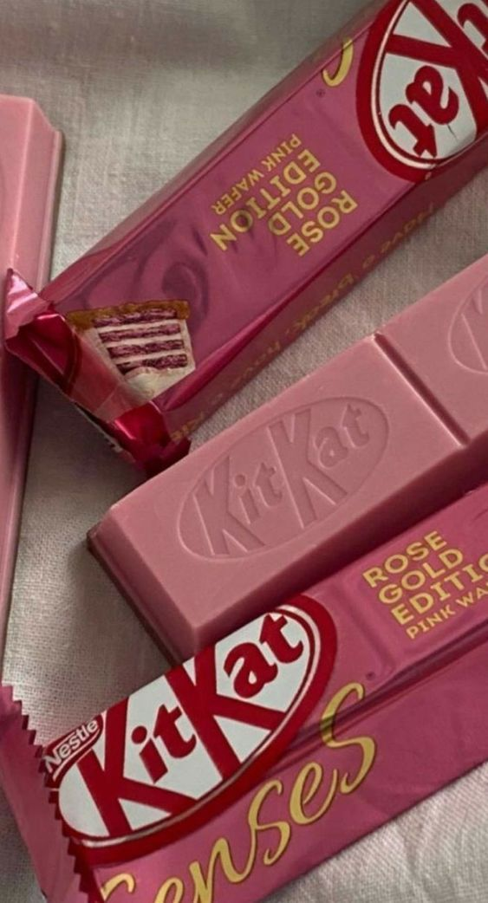

The world's favorite break
The perfect balance of chocolate and wafer, there's a reason KitKat is enjoyed in more than 80 countries. The iconic brand is an international symbol for hitting the pause button on life - to enjoy a well-earned break.

THE NESTLÉ COCOA PLAN
- Better farming - addressing issues such as agricultural practices and tackling deforestation.
- Better lives - which seeks to empower women and eliminate child labour.
- Better cocoa - which covers our Rainforest Alliance certification, and building long-term relationships in our supply chain.
Have a sustainable break
Every single KitKat is using Rainforest Alliance certified cocoa through our Nestlé Cocoa Plan. By 2025 KitKat is committed to become carbon neutral – reducing our emissions as much as possible and supporting a transition to regenerative agriculture.